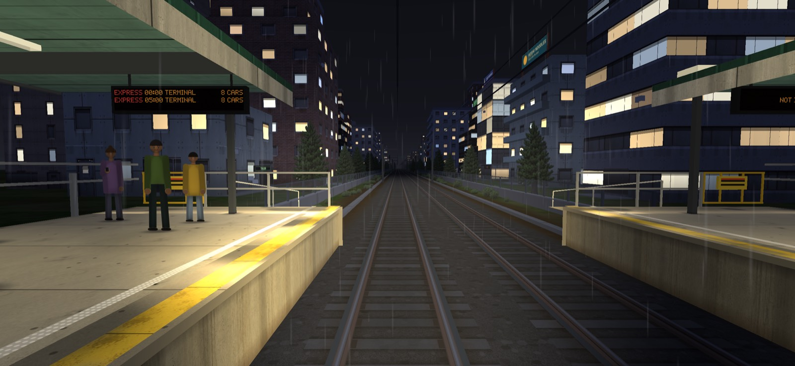
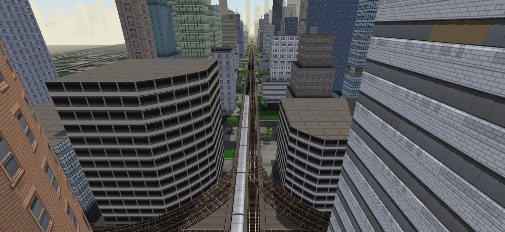

Photo mode freezes the game where you are and hands you a camera. Nothing moves until you leave: the clock, the timetable and every penalty wait for you, so you can take as long as you like over a shot. Pictures go straight to your phone's photos and into the game's own gallery.
01Getting in and out
There are three ways in:
- During a run: tap the small camera tile in the cab, between the horn and the exit. The run pauses exactly where you are, with your own train and line.
- After a run: tap PHOTO on the finish screen.
- From the train picker: open TRAIN on the title and tap PHOTO. This is the garage: your train posed on the open line, with every other train a tap away.
Tap DONE at the top right to leave. From a run, you pick up exactly where you stopped, with the clock where it was.
02The screen
- 1The train's name and what your fingers do right now.
- 2GALLERY, HIDE (clears the screen; tap anywhere to bring it back) and DONE.
- 3The shutter, and under it your last picture.
- 4The open panel's settings. They wrap onto more lines on a narrow phone.
- 5The tabs. The one in amber is open.
Chips with an amber outline are switched on. A small yellow 2×AD badge marks a pro tool.
03Moving the camera
The camera has two kinds of eye, chosen on the EYE line of CAMERA.
Orbit (the default)
The camera circles a point on the train, like a drone on a tether.
| Gesture | What it does |
|---|---|
| Drag | Orbit round the train: sideways goes round it, up and down raises or lowers the camera. |
| Pinch | Move in close or back away. |
| Two-finger drag | Slide the point you are looking at along the train and up or down. |
| Double tap | Put the view back. |
Trackside
TRACKSIDE puts you on your feet beside the line, like a real photographer: the camera stays where you stand and only the lens changes.
| Gesture | What it does |
|---|---|
| Drag | Walk over the ground. |
| Pinch | Zoom the lens. |
| Two-finger drag | Move where you are aiming. |
| Double tap | Put the view back. |
With the trackside eye, HEIGHT sets how high you hold the camera: crouch by the rails or stand on a bank. TILT leans the picture for a dramatic angle; drags still go the way you would expect on a level picture.
04CAMERA: views and lens
- VIEW 3/4 FRONT steps through set-up views: 3/4 front, nose, side, door, bogie, gangway, roof and 3/4 rear. Start from one and fine-tune with your fingers.
- RESET puts the current view, lens and tilt back.
- LENS runs from 16 mm (very wide, close and dramatic) to 135 mm (long, flat and far away). Around 35 to 50 mm looks most like your own eye.
- 2× saves the still at twice the screen's size, for a sharper picture to crop or print. It is a pro tool.
- VIEWS keeps four cameras of your own. Tap an empty +1 to save the camera there; tap a full ★1 to jump back to it. To replace one, tap SAVE and then the slot (it shows ↓1). Saved views remember the eye, the lens and the tilt, and work on any train.
05Panning shots
The line at the top of CAMERA turns a still into a moving shot. The game takes a quick burst and blends it, like a real camera with a slow shutter; the screen says DEVELOPING… for a second or two.
- PAN: the camera swings with a passing train. The train stays sharp and the background streaks.
- ROLL: the camera rides along beside the train. The train is pin sharp and the ground and lineside rush past.
- SPEED is how fast the train is going in the shot; it starts at your speed in the run.
- SHUTTER is how long the shutter stays open. Longer means more streak.
Panning shots are a pro tool and always save at the screen's size.
06TRAIN: where it stands
- Place: the slider moves the train anywhere along the line, with a tick under it at every station. ◀ STOP and STOP ▶ jump to the station before or after. HERE is where your run stopped, PLATFORM the nearest station and OPEN LINE a clear stretch between stations.
- Train: in the garage, ◀ and ▶ change the train.
- ◀ CAR and CAR ▶ move the camera one car along.
- DOORS SHUT steps through shut, open and working (opening and closing).
A second train
2ND TRAIN brings another train onto the other track. MEET sends it towards yours; ALONGSIDE runs it next to yours the same way. GAP sets how far ahead it is, and LEVEL lines the two noses up.
07SCENE: time and weather
- TIME: drag through the whole day. The low sun of early morning and evening gives long shadows and warm light; at night the windows and street lights come on.
- Weather: ☀ CLEAR ☁ OVERCAST ≡ FOG 🌧 RAIN ⛈ STORM ❄ SNOW.
- LAMPS ON switches the train's headlamps.


08LOOK: frame and finish
Frame
FRAME crops the picture: FULL SCREEN 16:9 3:2 4:5 1:1 9:16. The rest of the screen dims so you see exactly what will be saved. 4:5 and 1:1 suit social feeds; 9:16 is for stories. GRID adds rule-of-thirds lines (they are not saved).
Pictures carry a small caption stamp: the line, where the train stands and the train in one corner, and the date in orange film-camera figures in the other, under the game's name. Once you have removed the ads you can take it off with STAMP, or keep it and drop just the game's name with GAME NAME.
Filters and grading
FILTER: NONE VIVID MONO SEPIA FADED. Then fine-tune one at a time on the slider: exposure, contrast, saturation, warmth, vignette and grain. RESET takes the look back to plain.
09Blur and focus
The BLUR line on LOOK has three settings:
- OFF: everything sharp.
- TILT-SHIFT: a sharp band across the middle with blur above and below, which makes the scene look like a model railway. Best from high up looking down.
- DEPTH: a real camera's depth of field. The aperture slider goes from f/1.4 (very soft background) to f/16 (nearly everything sharp). Tap the screen to focus on that spot, or tap TRAIN to keep the focus on the train. BOKEH opens lamps and lit windows behind the focus into round discs; try it at night with a long lens.
10CHALLENGES
The CHALLENGES tab lists today's DAILY PHOTO, shared by every player, and the photo challenges for the line you are on: a train at a level crossing at night, a meet at a station, a panning shot at speed, a long-lens shot, and more.
- SET UP takes you there: it sets the place, time, weather, second train, eye, lens and frame for you. Then compose it your way.
- A picture counts when it meets every need of the challenge and the train fills at least 5% of the frame. If it is close but too small, the game says so; move in or use a longer lens.
- A banner says CHALLENGE DONE, the challenge is ticked, and SEE PHOTO opens the picture that did it. Done challenges also show in your logbook, and the finish screen hints at a challenge under its PHOTO button.
11Taking and sharing
- Tap the shutter. The screen flashes and the picture is saved to your phone's photos (an album named LocalLineDriver on Android). The first time, your phone asks if the game may add photos: it only ever adds pictures, it never reads your library.
- Tap the thumbnail under the shutter to share the picture straight away. Long-press it to open it in the gallery.
- Want a clean screenshot of the live view instead? Tap HIDE, take your phone's own screenshot, and tap anywhere to bring the controls back.
12The gallery
Every picture you save is also kept in the game's gallery, together with how it was taken. Open it from GALLERY in photo mode, the GALLERY button in the logbook or the train picker, or a long press on the thumbnail.
- Filter by ALL, by star, or by line.
- In a picture: SHARE sends the full-size file; ★ stars it; DELETE removes it from the game (your phone's photos keep their copy).
- SHOOT AGAIN puts the whole scene back: line, place, train, camera, lens, frame, look, time, weather, second train and doors. Change one thing and shoot a new version.
- The gallery holds 300 pictures. When it is full the game offers to delete the 50 oldest without a star; starred pictures are never dropped.
DELETE MY DATA in the logbook also empties the gallery. See the Privacy Policy.
13Pro tools
Most of photo mode is free: every view, the lens, both eyes, the place, time, weather, doors, lamps, frames and challenges. A few tools are pro and wear a small ADAD badge:
- panning shots (PAN and ROLL)
- filters and grading, tilt-shift and depth of field
- 2× pictures
- trains that do not run on the line you are on (and, from a run, any train but your own)
You can try every pro tool and see it live. Only when you press the shutter does the game ask: watch one ad to use them all until you leave photo mode, or TAKE IT PLAIN to save the same picture without them. If you have removed the ads, every pro tool is yours with no ad.
14Tips
- Get low. A trackside eye a little above the rails with a 24 mm lens makes any train look huge.
- Go long for stations. 85 to 135 mm from far down the platform stacks the canopy, lamps and train together.
- Golden hour. Drag TIME to just after sunrise or just before sunset for warm light and long shadows.
- Night and rain. Lamps on, rain or storm, depth of field with BOKEH: the lights turn into soft discs.
- Save your favourite angles in VIEWS, then try them on every train in the garage.
- Leave room. Put the train on a grid line with space ahead of the nose for it to run into.